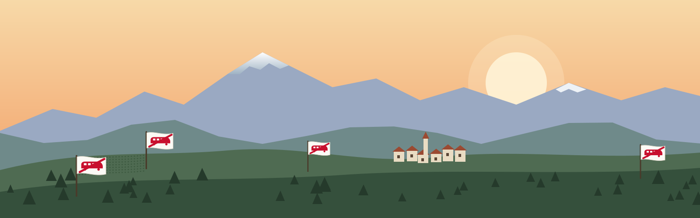

La valle
La Val di Susa: i paesi, i luoghi dove ci siamo ritrovati, i cantieri e le infrastrutture che la attraversano.
In breve I paesi della valle
- Popolazione. I 20 comuni della tappa contano in tutto circa 53.100 residenti (somma: 53.136) secondo le stime ISTAT al 2026-01-01 riportate da tuttitalia 12. Il comune più popoloso è Avigliana (12.035), il meno popoloso Exilles (241) 1. I dati sono "stimati": quelli definitivi escono a dicembre con il Censimento permanente 12.
- Enti sovracomunali. Secondo un elenco aggiornato al 2019-09-13, 15 dei 20 comuni fanno parte dell'Unione Montana Valle Susa 3. Giaglione, Gravere, Chiomonte, Exilles e Salbertrand non sono in quell'elenco 3.
- Opere della Torino–Lione per comune.
- Il tunnel di base arriva in Italia a "Susa-Bussoleno" 4. Sono previsti il Nodo di Susa, con la nuova stazione internazionale, e l'interconnessione con la linea storica all'ingresso della stazione di Bussoleno 4.
- Chiomonte ospita il cantiere italiano principale (variante di cantierizzazione del 2018) e la galleria della Maddalena 45.
- Il cantiere del tunnel CO3-4 riguarda anche Giaglione 5. Salbertrand ospita il sito CO10 per la valorizzazione dei materiali di scavo 5. A San Didero e Bruzolo si costruisce il nuovo autoporto 59.
- Il D.L. 121/2021 dichiara di interesse strategico aree di Bruzolo, Bussoleno, Giaglione, Salbertrand, San Didero e Susa 4.
- Le fasi successive riguardano la tratta Bussoleno–Chiusa di San Michele e la tratta Avigliana–Orbassano 49.
- Posizioni dei comuni.
- 2005-03-22 [divergenza con 01b: "sabato 19 marzo 2005", 33 consigli comunali e 2 di comunità montana in successione; da verificare]: secondo la cronologia del progetto, i consigli di 35 enti locali si riuniscono in seduta congiunta a Torino e approvano una delibera contraria all'opera 33. Numero e testo non sono stati trovati.
- 2012-03-08: 23 sindaci della valle chiedono ai partiti un "tavolo istituzionale" 12.
- 2018-06-25: i comuni di Chiomonte, Giaglione, Gravere, Salbertrand e Chianocco partecipano alla seduta plenaria n. 268 dell'Osservatorio 15.
- Compensazioni. Un documento dell'Osservatorio ("Smart Susa Valley", 2013 o successivo) indica circa 112,5 milioni di euro di compensazioni, pari al 5% delle opere in Italia, e una prima tranche CIPE di 10 milioni 7. Il Protocollo addizionale del 2016-03-08 assegna all'Italia 172,24 milioni per espropri, interferenze e misure di accompagnamento 4. La delibera CIPE 67/2017 prevede 57,26 milioni per "misure di accompagnamento ulteriori" 4. Non sono state trovate ripartizioni per singolo comune, salvo alcune voci per Susa 7.
In breve I luoghi della lotta
- Presidi e acquisti di terreni. Tra il 2005 e il 2026 il movimento No Tav ha tenuto presidi stabili in più comuni della valle. Un articolo del 2024 parla di sei presidi attivi e uno sotto sequestro e ne nomina Borgone, Venaus, San Giuliano, Vaie, i Mulini della Val Clarea e San Didero 1. Accanto ai presidi il movimento ha organizzato acquisti collettivi di terreni sui tracciati: Colombera (2008-03-30, 1.397 minilotti), Venaus (2008-06, 1.500 acquirenti), Maddalena (2010-01, 64 acquirenti), San Giuliano di Susa (2011 o 2012, secondo le fonti) 159.
- 2005, Seghino e Venaus. A Seghino, frazione sopra Mompantero, il 2005-10-31 ci sono scontri durante l'accesso ai siti dei sondaggi 20. L'11 novembre la sonda viene portata in località Seghino 16. A Venaus, il 2005-11-30, centinaia di persone passano la notte nei campi del futuro cantiere 11. Il presidio viene sgomberato nella notte tra il 5 e il 6 dicembre e rioccupato l'8 dicembre 920.
- 2010–2012, Chiomonte e Val Clarea. Il 2010-11-19 la Procura di Torino sequestra un presidio in costruzione a Chiomonte 2. Nel maggio 2011 l'area della Maddalena viene occupata e chiamata "Libera Repubblica della Maddalena". Le fonti indicano date diverse per l'inizio: 15, 23 o 24 maggio 91319. L'area viene sgomberata il 2011-06-27 20. Il 2012-02-27 l'ampliamento del cantiere comprende la baita della Clarea 1020. Il 2012-03-04 nasce un presidio a Giaglione 14.
- Incendi. I presidi di Borgone e Bruzolo vengono incendiati prima del 2012 7. Quello di Vaie brucia nel novembre 2013 e di nuovo nell'autunno 2023 315. A San Didero bruciano il tendone (4 gennaio, anno non indicato) e il punto informativo (febbraio 2022) 8. Il movimento attribuisce gli incendi a persone ignote e li definisce dolosi 3815.
- 2020–2026, San Didero, Mulini, San Giuliano. I Mulini della Clarea: presidio dall'inizio di luglio 2020, barricate rimosse il 2020-07-24 4. San Didero: sgombero dell'area dell'autoporto il 2021-04-13 1220. Nel novembre 2023 vengono sequestrati i presidi di San Didero e dei Mulini 3. San Giuliano: sgombero il 2024-10-07, rioccupazione nello stesso mese 518. Nel dicembre 2025, dopo gli sfratti del 19 novembre, il movimento occupa una delle case espropriate 6.
In breve I cantieri e le infrastrutture
- L'opera. La sezione transfrontaliera della Torino–Lione misura circa 65 km tra Susa e Saint-Jean-de-Maurienne 1. Il tunnel di base è lungo 57,5 km, di cui 12,5 in Italia e 45 in Francia, a doppia canna 46; una presentazione TELT del 2020 indica 57 km (12 in Italia, 45 in Francia) 18. Il totale delle gallerie da scavare, comprese discenderie e cunicoli, è indicato in 164 km 18.
- Avanzamento dichiarato. Le cifre cambiano a seconda di cosa si conta. TELT: al 2026-02-28 "oltre 47 km" di gallerie scavate, di cui più di 20 km di tunnel di base, circa il 29% dei 164 km 1. Rapporto OTI Piemonte: a fine 2025 46 km su 164, oltre il 28%, con 11 cantieri attivi 8. Il Post e Sky TG24 (luglio 2026): 21 km su 115 km delle due canne principali, cioè meno del 20%, con 16 cantieri aperti 56. Osservatorio della Démarche Grand Chantier (Savoia): "48,5 km d'excavations du tunnel de base (au 31/05/2026)" 7 [da verificare: la dicitura non coincide con quella di TELT]. Nel 2024 Il Post indicava 38,2 km di gallerie, di cui circa 14 km di tunnel di base, tutti in Francia 4.
- Lato italiano. Il cantiere principale è a Chiomonte, dove la variante di cantierizzazione del 2018 lo ha spostato da Susa 34. Nel gennaio 2026 è stato completato lo svincolo di cantiere sulla A32 1. Il 2026-03-11 è stata consegnata in Germania la fresa destinata a Chiomonte, che dovrebbe scendere nella montagna nel 2027 e scavare circa 10 km verso Susa 1. Lo scavo del tunnel di base sul lato italiano non è ancora iniziato a luglio 2026 56. Gli altri siti sono Susa (deposito temporaneo, imbocco est, futura stazione internazionale), San Didero (nuovo autoporto, che sostituisce quello di Susa), Salbertrand (trattamento dello smarino e fabbrica dei conci) e Torrazza Piemonte (conferimento delle terre) 248.
- Regime di sicurezza. L'art. 19 della legge 183/2011 ha dichiarato di interesse strategico nazionale le aree di Chiomonte 21. L'art. 3, comma 9-ter, del DL 121/2021 ha esteso le aree ai siti di Bruzolo, Bussoleno, Giaglione, Salbertrand, San Didero, Susa e Torrazza Piemonte 3. Le ordinanze del prefetto di Torino sulle "zone rosse" sono descritte nella ricerca 06a 21.
- Infrastrutture esistenti. La ferrovia Torino–Susa è aperta dal 1854; il traforo ferroviario del Frejus è scavato tra il 1857 e il 1871 15. Il traforo stradale del Frejus apre nel 1980 11; l'autostrada A32 viene costruita tra il 1984 e gli anni Novanta 11. Nel 2024 il traforo stradale registra 2.410.247 transiti, di cui 1.106.603 di veicoli pesanti 12. L'elettrodotto in corrente continua Piossasco–Grand-Île (190 km, interrato) segue la A32 e passa nel traforo stradale 1314.
- Lato francese. Le tre discenderie di Villarodin-Bourget/Modane, Saint-Martin-La-Porte e La Praz sono scavate tra il 2002 e il 2010 17. Dal 2019 al 2025 TELT avvia i lotti del tunnel di base CO8, CO6-7 e CO5, il pozzo di Avrieux e il lotto CO11 per i materiali di scavo 7.
Le schede
Tecnocity presenta l'ipotesi TGV attraverso la Val di Susa
Presentazione a politici ed esperti
Primo incontro pubblico di Habitat a Condove
Primo incontro organizzato da Habitat (fonte unica)
Nascita del comitato Habitat
Primo nucleo organizzato della mobilitazione (fonte unica)
Consigli comunali in piazza Castello
33 consigli comunali e 2 di comunità montana in successione approvano la stessa delibera
Consiglio comunale congiunto dei comuni della valle a Torino
Delibera unitaria contraria all'opera; numero e testo non trovati
da verificareSeghino: arrivo della macchina sondatrice
All'alba viene portata in località Seghino la macchina per i sondaggi (fori di 15 cm fino a 800 m)
Venaus: notte nei campi del cantiere previsto
Centinaia di persone passano la notte nell'area del cantiere; il Comune apre sala consiliare e centro polivalente
Colombera: primo acquisto collettivo di terreni
Primo acquisto collettivo della campagna Compra un posto in prima fila (fonte unica)
Venaus: acquisto collettivo del terreno del presidio
Acquisto del terreno dove sorgeva il presidio (fonte unica)
Maddalena: acquisto della particella 31
Acquisto di 889 m² vicino alla cascina (fonte unica)
Chiomonte: sequestro del presidio in costruzione
La Procura di Torino dispone il sequestro giudiziario del presidio dove era previsto il tunnel geognostico
Maddalena: occupazione e Libera Repubblica
Occupazione dell'area del cantiere e costruzione di un fortino; data di inizio divergente (15, 23 o 24 maggio)
Val Clarea: permanenza sul cedro
Turi Vaccaro resta due giorni su un cedro, poi abbattuto (fonte unica)
Val Clarea: espropri previsti
Espropri dei terreni intorno alla baita previsti per il 28 febbraio
Chianocco: auto di attivisti bruciate
Nella notte tra il 28 e il 29 febbraio bruciano tre auto di attivisti durante i blocchi stradali
Comunicazioni LTF di occupazione temporanea di terreni
Avvio della procedura per circa 2 ettari a Chiomonte
Giaglione: nuovo presidio
Nuovo presidio vicino al cantiere dopo una manifestazione nei boschi della Val Clarea (fonte unica)
23 sindaci chiedono un tavolo istituzionale
Appello dei sindaci e del presidente della Comunità montana ai partiti
San Giuliano: acquisto collettivo del terreno
Acquisto collettivo del terreno; Il Post indica il 2011
Vaie: incendio del presidio
Il presidio costruito nel 2005 viene distrutto dalle fiamme; il movimento parla di incendio doloso
Seduta plenaria n. 268 dell'Osservatorio
Comuni degli ambiti A1, A2, B1, B2, B3 presenti alla Prefettura di Torino
Mulini della Clarea: rimozione delle barricate
La polizia rimuove le barricate lungo il sentiero gallo-romano; scontri; tentativo serale di ricostruzione
Sgombero del presidio dell'ex autoporto
Sindaci di San Didero e Bruzolo non informati secondo LaPresse
San Didero: incendio del punto informativo
Il punto informativo del presidio viene distrutto da un incendio notturno; precedente tentato incendio del tendone il 4 gennaio (anno non indicato)
Vaie: nuovo incendio del presidio
Incendio poche settimane prima del 2023-11-21 (fonte unica)
Sequestro dei presidi di San Didero e dei Mulini
La Digos notifica il sequestro dei presidi e di terreni vicini; decine di attivisti ricevono gli atti
San Giuliano: abbattimento della recinzione e rioccupazione
Gli attivisti abbattono in più punti la recinzione e riprendono il presidio
Sgombero del presidio di San Giuliano
Sgombero notturno di un terreno acquistato da attivisti nel 2012 e destinato a esproprio per la stazione internazionale
Susa: manifestazione contro gli espropri
Centinaia di persone manifestano a Susa
San Giuliano: sfratti di tre abitazioni
Sfratti di tre abitazioni nell'area di espansione dei cantieri
San Giuliano: occupazione di una casa espropriata
Circa due settimane dopo gli sfratti il movimento occupa una delle case e la dichiara presidio permanente
Almese
6.231 ab.; lettura della sentenza TPP 2015-11-08
Area Consepi / ex Pista di Guida Sicura
deposito temporaneo CO02 e sito CO10
Arquata Scrivia
Arrivo della marcia contro il Terzo Valico
Avigliana
12.035 ab. (stima ISTAT 2026-01-01); linea storica Avigliana-Bussoleno; tratta Avigliana-Orbassano (circa 23 km)
Bardonecchia
Pullman No TAV fermati al Fréjus (slug esistente)
Bayonne
Sede del 6° forum
Borgone Susa
2.250 ab.
Brindisi
Sit-in No TAP/SNAM
Bruzolo
1.513 ab.; autoporto; area strategica DL 121/2021
Bussoleno
5.766 ab.; imbocco est e interconnessione con la linea storica
Cantiere nuovo autoporto
68.000 m2 lungo la A32; committenza SITAF; coordinate da verificare
Caprie
2.014 ab.
Cardano al Campo
sede del Circolo Quarto Stato, dove si è tenuto lo spettacolo "Alla Maddalena"
Chambéry
Manifestazioni contro l'opera
Chapareillan
Sede del CCLT; raduno del 2015
Chianocco
1.494 ab.; 557 m; ambito B1 Osservatorio
Chimilin
Sede della CADS e della Coordination del 2012; partenza della marcia del 2015
Chiomonte
838 ab.; 746 m; cantiere italiano principale; galleria della Maddalena
Chiusa di San Michele
1.524 ab.; capo della tratta Bussoleno-Chiusa (fase successiva)
Condove
4.422 ab.; 385 m
CTO, Torino
Fiaccolata per Luca Abbà
Europa (più città)
Presidi di solidarietà all'estero
Exilles
241 ab.; 877 m
Firenze
Sessione della rete a Firenze 10+10
Giaglione
585 ab.; 729 m; cantiere CO3-4; piazzali a est del Clarea
Gravere
684 ab.; 812 m
Grenoble
Sede del Tribunale amministrativo
Hendaye
Luogo della Carta di Hendaye
La Chapelle
Luogo del raduno del 17-18 giugno 2023 (slug esistente)
Lione
Manifestazione durante il vertice italo-francese
Maddalena di Chiomonte / Libera Repubblica della Maddalena
Area occupata e chiamata Libera Repubblica della Maddalena nel 2011, poi cantiere del cunicolo esplorativo. Coordinate dalla cronologia, non verificate
Mattie
679 ab.; 734 m
Maurienne
Valle della Savoia sul versante francese della Torino–Lione (slug esistente)
Messina
Sede del corteo No Ponte con la delegazione valsusina
Modane
Fermo di militanti il 16 giugno 2023 (slug esistente)
Mompantero
612 ab.; 497 m; Seghino 2005
Notre-Dame-des-Landes
Sede del 2° forum; progetto di aeroporto abbandonato
Piazza Castello, Torino
Sede della manifestazione Sì TAV e partenza del corteo No TAV
Piazza del Nettuno, Bologna
Presidio di solidarietà
Piazzale Tiburtino, Roma
Partenza del corteo No TAV
Presidio dei Mulini
Presidio lungo il sentiero gallo-romano presso i Mulini della Clarea, il più vicino al cantiere di Chiomonte
Presidio di Borgone
Casupola prefabbricata in un prato, aperta ogni giorno alle 15.30 secondo Il Post (2024)
Presidio di Bruzolo
Presidio permanente incendiato prima del febbraio 2012 (fonte unica sul presidio); la stazione di Bruzolo è punto di ritrovo nel 2021
Presidio di Giaglione (2012)
Presidio formato dopo una manifestazione nei boschi della Val Clarea (fonte unica)
Presidio di Vaie
Struttura in legno e tubi metallici del 2005, incendiata nel 2013 e nel 2023
Presidio No Tav di San Didero
Capannone e prefabbricati su terreno privato concesso al movimento, di fronte al cantiere dell'autoporto
Presidio Sole e Baleno di San Giuliano
Terreno acquistato collettivamente nell'area della stazione internazionale; oggetto di esproprio
Roma
Sede della segreteria TPP
Roșia Montană
Sede del 4° forum; sito UNESCO dal 2021
Saint-Jean-de-Maurienne
Raduno di eletti favorevoli; scalo di smistamento citato da Sud Rail
Saint-Martin-la-Porte
Uno dei nove comuni del divieto (slug esistente)
Saint-Priest
Riunione dei 42 sindaci
Salbertrand
635 ab.; 1.035 m; sito CO10
San Didero
493 ab.; 433 m; nuovo autoporto
Sant'Ambrogio di Torino
4.501 ab.
Seghino
Località sopra Mompantero, sito dei sondaggi geognostici del 2005
Serravalle Scrivia
Partenza della marcia contro il Terzo Valico
Stazione Termini, Roma
Azione sui binari dell'Alta Velocità
Stoccarda
Sede del 3° forum (Wagenhallen); progetto Stuttgart 21
Strasburgo
Parlamento europeo (slug esistente)
Susa
5.776 ab.; Nodo di Susa e stazione internazionale; CO02 Consepi
Terreno della Colombera
1.397 minilotti della campagna Compra un posto in prima fila (fonte unica)
Tunisi
Forum Sociale Mondiale; Carta di Tunisi
Val Clarea e baita della Clarea
Baita compresa nell'area recintata il 2012-02-27; traliccio vicino alla baita
Venaus
843 ab.; 599 m; presidio 2005; Festival Alta Felicità
Alberto Cirio
annuncio sulle opere di compensazione
Alberto Lorusso
dichiarazione sullo sgombero 2021
Alberto Perino
Nel febbraio 2012 annuncia l'operazione di polizia legata agli espropri in Val Clarea
Alberto Poggio
tratta Avigliana-Orbassano
Andrea Archinà
sindaco di Avigliana
Andrea Cavaliere
sindaco di Almese
Antonella Zoggia
sindaca di Bussoleno
Avernino Di Croce
indagato (2023), esito non trovato; fonte unica
Davide Gastaldo
sindaco di Mompantero
Diego Mele
sindaco di Borgone Susa
Enzo Campo Bagatin
sindaco di Giaglione
Ezio Paini
plenaria Osservatorio
Fabrizio Ricca
Commenta la rimozione delle barricate ai Mulini (2020-07-24)
Francesca Frediani
sostegno all'amministrazione di San Didero
Francesco Richetto
dichiarazione 2021
Gian Andrea Torasso
sindaco di Caprie
Giuseppe Galliano
plenaria Osservatorio
Jacopo Suppo
sindaco di Condove
Loredana Bellone
dichiarazione sullo sgombero 2021
Luca Abbà
Il 2012-02-27 sale su un traliccio vicino alla baita della Clarea e cade dopo una scossa elettrica; GreenMe lo indica come leader del movimento, Wu Ming 1 come contadino
Marina Pittau
sindaca di Mattie
Nilo Durbiano
dichiarazioni su ascolto e compensazioni
Ombretta Bertolo
dichiarazione 2021
Osvaldo Vair
sindaco di Chianocco
Piero Franco Nurisso
plenaria Osservatorio
Piero Genovese
dichiarazioni sui cantieri della piana di Susa
Renzo Pinard
invito alla calma
Riccardo Cantore
sindaco di Chiusa di San Michele
Riccardo Joannas
plenaria Osservatorio
Roberto Barbon
sindaco di Bruzolo
Roberto Garbati
sindaco di Chiomonte
Roberto Pourpour
sindaco di Salbertrand
Roberto Segafredo
sindaco di Exilles
Sandro Plano
tavolo istituzionale 2012; TPP 2015
Silvano Ollivier
plenaria Osservatorio
Turi Vaccaro
Secondo Wu Ming 1 resta due giorni su un cedro in Val Clarea (2011-08-04) e una notte sul traliccio (2012-03-04) (fonte unica)
Vittorio Cogliati Dezza
Il 2012-02-27 chiede di fermare gli espropri e gli ampliamenti dei cantieri
Centro sociale Askatasuna
Suoi militanti sono citati tra gli attivisti ai Mulini il 2020-07-24
Comunità montana Valle Susa e Val Sangone
presidente Sandro Plano; osservazioni del 2012 al documento del Governo
Legambiente
Nel febbraio 2012 chiede di fermare espropri e ampliamenti dei cantieri in Val Clarea
Movimento No Tav
Anima i presidi di Venaus, Borgone, Vaie, Mulini, San Didero, San Giuliano; promuove gli acquisti collettivi di terreni
Osservatorio per l'asse ferroviario Torino-Lione
sedute plenarie con gli enti locali
SITAF
committenza delegata per il nuovo autoporto e lo svincolo di Chiomonte
Unione Montana Valle Susa
ente intercomunale; commissione tecnica sulla Torino-Lione
Patria Indipendente 2006 n. 1 pp. 11-13
Articolo emerso con la ricerca sul presidio di Venaus
l'Unità, 28 giugno 2011, p. 14
Pagina sullo sgombero della Maddalena (dal titolo di ricerca)
Umanità Nova 2011 n. 18
Numero emerso con la ricerca sulla Libera Repubblica della Maddalena
Umanità Nova 2011 n. 23
Numero emerso con la ricerca sulla Libera Repubblica della Maddalena
l'Unità, 4 marzo 2012, p. 8
Pagina emersa con la ricerca sulla baita della Clarea
Smart Susa Valley
compensazioni e progetti di sviluppo locale
Un viaggio che non promettiamo breve
Libro sulla storia del movimento No Tav
Allegato 1 alla delibera CIPE 67/2017
prescrizioni sul progetto di variante; da leggere per comune
Sintesi della seduta plenaria n. 268
comuni presenti e loro posizioni
Bando GUCE autoporto San Didero
gara per il nuovo autoporto
Presentazione del Presidente dell'Osservatorio
stato dei cantieri per comune
La tratta ferroviaria Torino-Lione
tracciato, aree strategiche, costi
Maddalena di Val Susa (testo del canto)
Canto sulla Maddalena
Parla la gente della valle. Tante voci, un solo no
Testimonianze emerse con la ricerca su Seghino
Fonti
I paesi della valle
- tuttitalia.it, Comuni della Città metropolitana di Torino per densità (stime ISTAT; data dedotta da [2]). https://www.tuttitalia.it/piemonte/provincia-di-torino/94-comuni/densita/ – aperto il 2026-11-11.
- tuttitalia.it, San Didero. https://www.tuttitalia.it/piemonte/68-san-didero/ – aperto il 2026-11-11.
- amministrazionicomunali.it, Unione Montana Valle Susa (ultimo aggiornamento 2019-09-13). https://www.amministrazionicomunali.it/unione/unione-montana-valle-susa – aperto il 2026-11-11.
- Camera dei deputati, Temi dell'attività parlamentare, La tratta ferroviaria Torino-Lione (senza data, successiva al 2025-07-30). https://temi.camera.it/leg19/post/la-tratta-ferroviaria-torino-lione.html – aperto il 2026-11-11.
- Osservatorio Torino–Lione, Presentazione del Presidente, 2022-10-20. https://presidenza.governo.it/osservatorio_torino_lione/PDF/20102022_PresentazionePresidenteOsservatorio.pdf – aperto il 2026-11-11.
- Menafra S., Lo scontro sulla Tav si è spostato a trenta chilometri da Torino, Open, 2026-07-29. https://www.open.online/2026/07/29/tav-torino-lione-avigliana-lavori-alta-velocita/ – aperto il 2026-11-11.
- Progetto notav-sito, 01-cronologia-conflitto-no-tav.md (ricerca precedente, fonte secondaria; date e coordinate da verificare).
- Blitz quotidiano, Tav, i sindaci ai partiti: aprire un tavolo istituzionale, 2012-03-08. https://archivio.blitzquotidiano.it/cronaca-italia/tav-i-sindaci-ai-partiti-aprire-un-tavolo-istituzionale-1148445 – aperto il 2026-11-11.
- Osservatorio Torino–Lione, Sintesi della seduta n. 268 (plenaria), 2018-06-25. https://presidenza.governo.it/osservatorio_torino_lione/PDF/20180625_SINTESI_268_PLENARIA.pdf – aperto il 2026-11-11.
- Osservatorio Torino–Lione (attribuzione dedotta dal testo), Smart Susa Valley, senza data (2013 o successivo). https://presidenza.governo.it/osservatorio_torino_lione/pdf/smart_susa_valley.pdf – aperto il 2026-11-11.
I luoghi della lotta
- Il Post (V. Clari), La protesta No TAV è passata attraverso le generazioni, 2024-10-03. https://www.ilpost.it/2024/10/03/no-tav-movimento-val-di-susa/ – aperto 2026-11-11.
- L'Indipendente, No Tav, sgomberato nella notte lo storico presidio di San Giuliano, 2024-10-07. https://lindipendente.online/2024/10/07/no-tav-sgomberato-nella-notte-lo-storico-presidio-di-san-giuliano/ – aperto 2026-11-11 (versione ?pdf=124308).
- Internazionale (Wu Ming 1), reportage No Tav, lotte in Val di Susa, 2016-02-22. https://www.internazionale.it/reportage/wu-ming-1/2016/02/22/no-tav-lotte-val-di-susa – aperto 2026-11-11.
- Progetto, 06b-eventi-di-ordine-pubblico.md (file interno, con le sue fonti).
- Montagna.tv, Alta velocità, arriva la macchina sondatrice, 2005-11-11. https://www.montagna.tv/24680/alta-velocita-arriva-la-macchina-sondatrice/ – aperto 2026-11-11.
- Montagna.tv, Anti-Tav, in diecimila assediano il cantiere, 2005-11-30. https://www.montagna.tv/24849/anti-tav-in-diecimila-assediano-il-cantiere/ – aperto 2026-11-11.
- Montagna.tv, No Tav, la procura sequestra il presidio, 2010-11-19. https://www.montagna.tv/31755/no-tav-la-procura-sequestra-il-presidio/ – aperto 2026-11-11.
- Blitz quotidiano (E. Condò), Tav, la protesta tappa per tappa: due mesi di lacrimogeni, sassi, proteste, 2011-07-30. https://archivio.blitzquotidiano.it/cronaca-italia/tav-la-protesta-tappa-per-tappa-due-mesi-di-lacrimogeni-sassi-proteste-928864 – aperto 2026-11-11.
- Progetto, 01-cronologia-conflitto-no-tav.md (file interno, fonte di pista: le sue affermazioni vanno verificate).
- GreenMe, NO TAV: gravemente ferito uno dei leader del movimento. Domani gli espropri, 2012-02-27. https://www.greenme.it/?p=485269 – aperto 2026-11-11.
- Blitz quotidiano, No Tav, nuovo presidio a Giaglione con un migliaio di persone, 2012-03-04. https://archivio.blitzquotidiano.it/cronaca-italia/no-tav-nuovo-presidio-a-giaglione-con-un-migliaio-di-persone-1143118 – aperto 2026-11-11.
- Blitz quotidiano, No Tav: "Chi incendia i nostri presidi non ci intimorisce", 2012-02-29. https://archivio.blitzquotidiano.it/cronaca-italia/no-tav-chi-incendia-i-nostri-presidi-non-ci-intimorisce-1137499 – aperto 2026-11-11.
- L'Indipendente, Ancora repressione in Val di Susa: sequestrati i presidi No Tav, 2023-11-21. https://lindipendente.online/2023/11/21/ancora-repressione-in-val-di-susa-sequestrati-i-presidi-no-tav/ – aperto 2026-11-11 (versione ?pdf=94987).
- Blitz quotidiano, Vaie (Torino), fuoco al presidio Tav. Attivisti: "È un attentato", 2013-11-02. https://archivio.blitzquotidiano.it/foto-notizie/vaie-torino-fuoco-presidio-tav-attivisti-1708131 – aperto 2026-11-11.
- L'Indipendente, Intimidazione ai No Tav: incendiato il presidio del movimento, 2022-02-07. https://www.lindipendente.online/2022/02/07/intimidazione-ai-no-tav-incendiato-il-presidio-del-movimento/ – aperto 2026-11-11 (versione ?pdf=37597).
- Sky TG24, Val di Susa, polizia rimuove barricate No Tav: scontri con attivisti. Feriti due agenti, 2020-07-24. https://tg24.sky.it/torino/2020/07/24/no-tav-val-di-susa-presidio-mulini – aperto 2026-11-11.
- L'Indipendente (R. De Luca), Val di Susa, nella notte sgomberato con la forza un presidio No Tav, 2021-04-13. https://www.lindipendente.online/2021/04/13/val-di-susa-nella-notte-sgomberato-con-la-forza-un-presidio-no-tav/ – aperto 2026-11-11 (versione ?pdf=12199).
- L'Indipendente, Valsusa, i No Tav abbattono le barriere e riconquistano il presidio di San Giuliano, 2024-10-21. https://www.lindipendente.online/2024/10/21/valsusa-i-no-tav-abbattono-le-barriere-e-riconquistano-il-presidio-di-san-giuliano/ – aperto 2026-11-11 (versione ?pdf=125588).
- L'Indipendente, Valsusa, i No Tav occupano le case espropriate: nasce il presidio di San Giuliano, 2025-12-04. https://www.lindipendente.online/2025/12/04/valsusa-i-no-tav-occupano-le-case-espropriate-nasce-il-presidio-di-san-giuliano/ – aperto 2026-11-11 (versione ?pdf=168499).
I cantieri e le infrastrutture
- TELT, comunicato stampa "TBM CO3/4", 2026-03-11. https://www.itinera-spa.it/wp-content/uploads/2026/03/TELT_CS-TBM-CO34_11032026_ITA.pdf – aperto il 2026-11-11 (copia sul sito di Itinera).
- V. Clari, "Che fine ha fatto la Torino-Lione", Il Post, 2024-10-03. https://www.ilpost.it/2024/10/03/torino-lione-tav-lavori/ – aperto il 2026-11-11.
- N. Veschi, "TAV, a che punto sono i lavori? La Torino-Lione è ancora al 30%", Sky TG24, 2026-07-26. https://tg24.sky.it/cronaca/2026/07/26/tav-la-torino-lione-e-ancora-al-30 – aperto il 2026-11-11.
- TELT / SNCF Réseau / RFI, conferenza all'assemblea AFGC, 2020-02-04. https://www.afgc.asso.fr/app/uploads/2020/05/A01-AG-04-02-2020-Conférence-TELT-Alain-Chabert-modif-pour-publication.pdf – aperto il 2026-11-11.
- OTI Piemonte, Rapporto 2026, 2026-02-27. https://pie.camcom.it/sites/default/files/contenuto_redazione/bandi/allegati/2026-03-04/Rapporto-OTI-Piemonte-2026-27.02.26_1.pdf – aperto il 2026-11-11.
- "La talpa meccanica che deve scavare il tunnel della TAV va molto piano", Il Post, 2026-07-23. https://www.ilpost.it/2026/07/23/talpa-torino-lione-tav-ritardi/ – aperto il 2026-11-11.
- Démarche Grand Chantier Lyon-Turin, Observatoire, "Données clés" n. 29, luglio 2026. https://www.savoie.fr/web/sw_179122/obs-dgc-lyonturin-donneescles-n29-07-2026 – aperto il 2026-11-11.
- Camera dei deputati, Servizio studi, "La tratta ferroviaria Torino–Lione" (pagina senza data, aggiornata almeno al 2025). https://temi.camera.it/leg19/post/la-tratta-ferroviaria-torino-lione.html – aperto il 2026-11-11.
- Osservatorio per l'asse ferroviario Torino–Lione, presentazione del presidente, 2022-10-25. https://presidenza.governo.it/osservatorio_torino_lione/PDF/20102022_PresentazionePresidenteOsservatorio.pdf – aperto il 2026-11-11.
- Ricerca 06a,
ricerche/06a-norme-e-regimi-speciali.md(progetto). - CIFI Torino, presentazione sul Frejus, 2021-09-17. https://www.cifi.it/UplDocumenti/Torino20092021/01Cantore.pdf – aperto il 2026-11-11.
- SITAF, "History". https://www.sitaf.it/en/history/ – aperto il 2026-11-11.
- SITAF, dati di traffico T4 2024. https://sitaf.it/storage/2025/02/2024_dati_trafficoT4.pdf – aperto il 2026-11-11.
- Ministero dello sviluppo economico, notizia del 2011-03-25 sulla linea elettrica Italia–Francia. https://www.mise.gov.it/en/media-tools/news/energy-mse-qwork-starting-on-new-power-line-route-between-italy-and-franceq – aperto il 2026-11-11.
- RTE, "Savoie-Piémont: 190 km of European solidarity". https://www.rte-france.com/en/projects/savoie-piemont-190-km-of-european-solidarity-from-chambery-to-turin – aperto il 2026-11-11.
- Spie batignolles (FP&A), dossier de presse "Descenderie de Saint-Martin-de-la-Porte", 2015-11. https://fpa.fr/wp-content/uploads/2015/12/DP-Descenderie-de-Saint-Martin-de-la-Porte.pdf – aperto il 2026-11-11.